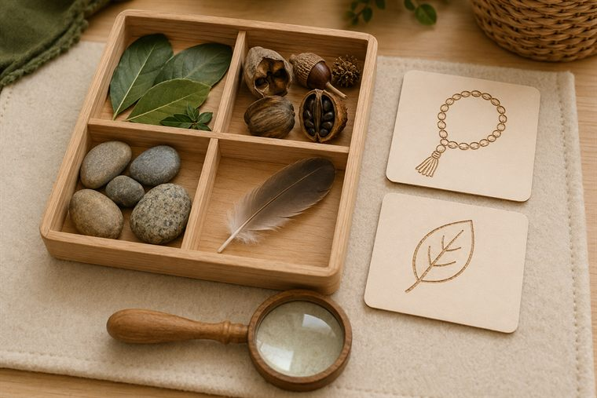
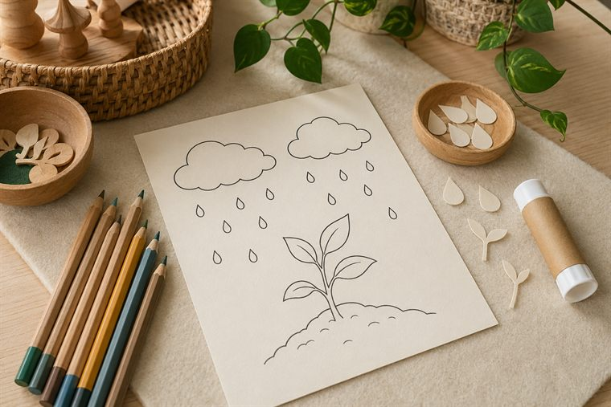
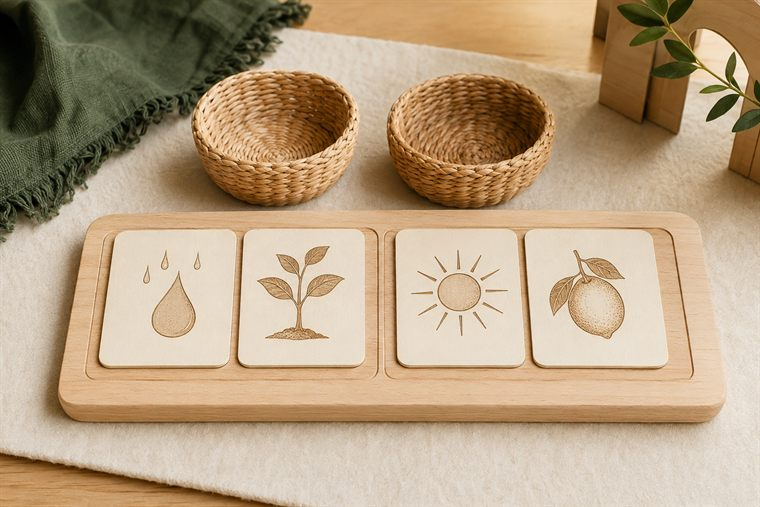
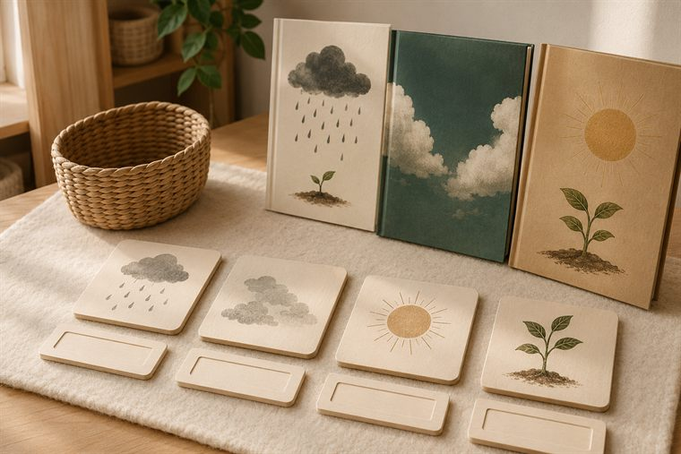

مساحاتُ لعبٍ حرّ بأدواتٍ تعليمية. لكثرة الأعداد نفتح ٤ أركانٍ متوازية بمراكز مختلفة؛ وزّعي المجموعات عليها وتتناوب بينها في الفترتين حتى لا تتكدّس. كل ركنٍ لمسةٌ تطبيقية خفيفة على فكرة اليوم. (أعمار ٥–٦: بناء/تلوين جاهز/قصّ ولصق/ترتيب/اختيار بطاقات/أدوار/حركة — بلا كتابة أو رسمٍ حرّ.)
دروس اليوم المتكاملة: كتابي المنير (سورة النبأ · تدبّر الآيات ٢١–٣٠) · علّمني ربي (مفهوم التفكّر) · أحبّك ربّي (الصمد ٣: قصة الاستسقاء).

🔎 أكتشف ما حولي · «محطّةُ التفكّر»
يلاحظُ الطفل بالمكبّر عيّناتٍ طبيعية آمنة متنوّعة (أوراقٌ · بذورٌ · أصدافٌ · حصًى)، ويُبطئُ النظرَ في دقّةِ التفاصيل، ويقولُ عند كلِّ عجيبةٍ: «سبحان مَن خلقه»؛ فالتفكّرُ عبادةٌ تزيدُ الإيمان. (ملاحظةٌ حسّية بلا كتابة.)
🧰 الأدوات: صوانٍ فيها عيّناتٌ طبيعية آمنة (أوراق · أصداف · حصى · بذور) · مكبّراتٌ وعدساتٌ يدوية · بطاقاتُ تسبيح مصوّرة.
📋 دور المعلمة: تُبطئ الملاحظةَ وتقودُ التسبيح: «انظرْ وتفكّرْ… مَن خلق هذا وأبدعه؟»؛ تحتفي بالدهشةِ والتفكّر لا بالإجابة.
🌱 المعنى المركزي: التفكّرُ في الخلق يقودني إلى معرفةِ الخالق.
📜 قوانين الركن: أبقى في ركني حتى ينتهي الوقت · أحافظ على أدواته · أتشارك وأنتظر دوري · أُعيد الأدوات مرتّبة.

🎨 فنوني الجميلة · «ألوّنُ مشهدَ المطر وألصقُ نِعَمه»
يلوّنُ الطفل مشهدًا جاهزًا لسماءٍ وغيثٍ ونبات، ثم يقصّ ويلصق قصاصاتِ قطرِ المطر والنبات؛ فينزلُ الغيثُ رحمةً من الله الصمد (كما استُسقيَ فسُقيَ)، ويردّدُ «أنزل اللهُ الغيثَ فأنبت».
🧰 الأدوات: مشهدُ مطرٍ ونباتٍ جاهزٌ للتلوين · أقلامُ تلوين · قصاصاتُ قطرٍ ونبات · مقصٌّ آمن ولاصق.
📋 دور المعلمة: تربطُ المطرَ بعطاء الصمد؛ تعين على القصّ واللصق؛ تُثني على الفرحِ والمشاركةِ لا الإتقان الفنّي.
🌱 المعنى المركزي: أنزل اللهُ الغيثَ رحمةً؛ فأتفكّرُ وأشكر.
📜 قوانين الركن: أبقى في ركني حتى ينتهي الوقت · أحافظ على أدواته · أتشارك وأنتظر دوري · أُعيد الأدوات مرتّبة.

🧩 أدرك وأستمتع · «أطابقُ المخلوقَ بأثرِ نعمته»
يطابقُ الطفل النعمةَ بأثرها المصوّر (مطرٌ ↔ نبات · شمسٌ ↔ ثمر · بذرةٌ ↔ شجرة)، فيرى كيف تتّصلُ نعمُ الله؛ والتفكّرُ يكشفُ هذا الاتّصال. (مطابقةٌ ولعب بلا كتابة.)
🧰 الأدوات: بطاقاتُ مطابقةٍ جاهزة (نعمةٌ ↔ أثرها) · لوحةُ ترتيبٍ مصوّرة · سلالُ تصنيف.
📋 دور المعلمة: تنمذجُ مطابقةً واحدة ثم تترك الطفلَ يستكشف؛ تحاورُه: «مَن جعل المطرَ سببًا للنبات؟»؛ تحتفي بالمحاولة.
🌱 المعنى المركزي: نعمُ الله متّصلةٌ؛ والتفكّرُ يكشفها فأشكر.
📜 قوانين الركن: أبقى في ركني حتى ينتهي الوقت · أحافظ على أدواته · أتشارك وأنتظر دوري · أُعيد الأدوات مرتّبة.

📚 أقرأ · «أتفكّرُ فأعرفُ ربّي»
يتصفّحُ الطفل قصصًا مصوّرة عن التفكّر في المطر والسماء والنبات، ويطابقُ الكلمةَ بصورتها؛ فكلّما تفكّرَ ازداد إيمانًا بربّه الصمد الذي يستغيثُ به الخلق. (تصفّحٌ ومطابقةٌ بلا كتابة.)
🧰 الأدوات: قصصٌ مصوّرة عن التفكّر والمطر والسماء · بطاقاتُ مطابقةِ كلمة-صورة · مصاحفُ في حواملها.
📋 دور المعلمة: تقرأ بهدوءٍ وتحاورُ عن الاستسقاء وحاجتنا إلى الصمد: «مَن نطلبُ منه الغيثَ حين نحتاج؟».
🌱 المعنى المركزي: كلّما تفكّرتُ ازددتُ إيمانًا بربّي الصمد.
📜 قوانين الركن: أبقى في ركني حتى ينتهي الوقت · أحافظ على أدواته · أتشارك وأنتظر دوري · أُعيد الأدوات مرتّبة.
تفاصيلُ الأركان الستّة وروتينُها في تبويب «خريطة الأركان» أعلى الصفحة، ولكلِّ لقاءٍ ركنان تطبيقيّان داخل دليله.